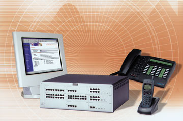
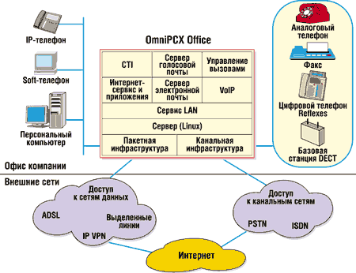
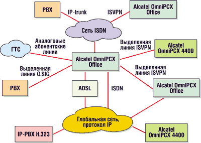

Игорь Фиошкин,
ведущий инженер-эксперт ЗАО "Алкатель"
С большой долей вероятности можно предсказать, что через десяток лет историки будут описывать нынешнее время как начало эры электронной коммерции. Плодами новаторских форм ведения бизнеса до последнего времени могли пользоваться только относительно крупные компании, способные внедрять дорогостоящее и сложное технологическое оборудование.
Малые и средние предприятия (SMB, small and medium business) испытывают значительные проблемы при попытках воспользоваться услугами электронной коммерции. Но именно такие предприятия составляют основу экономики европейских стран - более 99% от общего числа компаний. Итак, высокая стоимость владения современными системами связи делает их недоступными большинству предприятий SMB, но сегодня лишь переход на электронную коммерцию дает компании шанс выйти на мировой рынок. К счастью, это противоречие разрешимо.
Осенняя новинка
В сентябре 2001 г. на рынке появилось телекоммуникационное оборудование Alcatel OmniPCX Office, предназначенное для сектора SMB. Согласно классификации компании Alcatel (http://www.alcatel.ru), это оборудование относится к разряду e-Communication Appliance, что можно перевести как "механизм для электронного общения". Рассмотрим, что скрывается за этим названием.
|  |
| Системный блок, монитор, IP-телефон и мобильный телефон DECT в составе системы Alcatel OmniPCX Office.
|
Функциональная схема OmniPCX Office показана на рис. 1. Новое оборудование сочетает в себе телефонные функции, не уступающие возможностям больших УАТС, и средства передачи данных и высокоскоростного доступа в Интернет. В OmniPCX Office широко использованы конвергентные решения и технологии, ориентированные на электронную коммерцию. Клиентам доступна функциональность компьютерной телефонии (CTI), управления вызовами и беспроводной связи.
|  |
| Рис. 1. Функциональная схема Alcatel OmniPCX Office.
|
Система полностью открыта и использует множество стандартных протоколов, в частности, CSTA,TAPI и IP. OmniPCX Office позволяет работать с соединениями ISDN, PSTN, xDSL, обеспечивая гибкость в подключении к сетям операторов связи. Очень важно также, что OmniPCX Office работает под управлением ОС Linux, до сих пор не встречавшейся в телекоммуникационном оборудовании такого класса. Это позволило максимально упростить интеграцию приложений и работу в Интернете, так как Linux прекрасно интегрирована с основными протоколами глобальной сети.
При использовании OmniPCX Office для всех видов трафика создается единая инфраструктура, клиент получает "комплексное решение из одних рук" - соответственно отпадает необходимость в дорогостоящей системной интеграции. Кроме того, управление системой довольно простое, по плечу любому "продвинутому" пользователю.
OmniPCX Office не связывает потребителя окончательным выбором канальной или пакетной инфраструктуры сети. Система позволяет ориентироваться как на сетевую инфраструктуру, так и на классическую телефонную, плавно переходя от одного варианта к другому и совмещая их привлекательные черты. Во многом это обеспечивается конструктивными решениями.
Конструкция и функциональность
Alcatel OmniPCX Office представляет собой предварительно сконфигурированный сервер модульного исполнения, адаптируемый к требованиям конкретной компании. Предлагается три варианта типоразмеров модулей - с одним, двумя и тремя рядами слотов. Такое решение позволяет легко и с минимальными расходами наращивать систему. Предусмотрено соединение модулей в стек (до трех устройств); таким образом, в системе можно устанавливать до 27 плат. Платы различных типов могут устанавливаться в любые слоты.
В OmniPCX Office входит одна плата центрального процессора, а дополнительные модули подключаются с помощью плат расширения (MEX, по одной на каждый модуль). В зависимости от предоставляемых услуг в системе может быть установлено до шести плат сопроцессоров. Существует два типа плат центрального процессора и два типа плат сопроцессора. В самом простом случае OmniPCX Office комплектуется платой CPU. Плата CPUe используется, когда необходима поддержка голосовой почты и доступа в Интернет. Плата сопроцессора CoCPU предназначена для реализации функций VoIP, а CoCPU@ обеспечивает поддержку прокси-сервера, электронной почты, VPN и подключение внешних устройств - маршрутизатора или ADSL-модема.
В состав процессорных плат могут входить дочерние платы, которые и обеспечивают дополнительную функциональность. Например, для работы самого процессора не требуется дисковая система (вся информация хранится во флэш-памяти). Но для записи сообщений электронной и голосовой почты может потребоваться один или два дисковых накопителя. Дополнительно к центральному процессору в состав системы может входить до шести сопроцессорных плат. Их число напрямую зависит от количества плат, обеспечивающих функции локальной сети. Например, в системе могут устанавливаться две платы CoCPU, одна CoCPU@, три LANX16 и три LANX8. Платы двух типов для организации локальной сети отличаются числом портов 10/100 Base-T. Они поддерживают режим автоматического определения скорости передачи и функции коммутатора Fast Ethernet. К этим платам можно подключать внешние активные сетевые устройства разных производителей.
Подсистема передачи данных предоставляет клиентам услуги сервера DNS (Domain Name System), благодаря которым можно назначать имена устройствам сети и поддерживать трансляцию имен URL в IP-адреса при обращении к ресурсам Интернета. Система OmniPCX Office разрабатывалась с учетом невысоких требований к квалификации обслуживающего персонала, поэтому наличие сервера DHCP (Dynamic Host Configuration Protocol) позволяет обойтись без процедуры назначения IP-адресов сетевым устройствам вручную. Важная черта подсистемы передачи данных - возможность маршрутизации, обеспечивающая подключение пользователей локальной сети к Интернету. По линиям сети ISDN можно подключиться с разными вариантами использования полосы пропускания: статическое (64 или 128 Кбит/с), по запросу и динамическое (от 64 до 128 Кбит/с). Доступ через выделенные линии или xDSL обеспечивается с помощью подключаемого через порт Ethernet внешнего оборудования, например, модемов xDSL или маршрутизаторов.
Несмотря на свои малые размеры, система Alcatel OmniPCX Office обеспечивает пользователей всеми современными коммуникационными приложениями и сервисом для работы в Интернете. В первую очередь это разделяемый доступ по одному соединению для всех рабочих мест локальной сети. Теоретически число подключений не ограничивается, но практически при доступе по линии ISDN с полосой 128 Кбит/с число одновременно работающих пользователей не должно превышать 20. Впрочем, эта цифра существенно зависит от типа используемых приложений.
Средства защиты и Интернет
Для защиты абонентов сети Интернет разработчики OmniPCX Office оснастили эту систему развитыми средствами безопасности. Прежде всего упомянем встроенный межсетевой экран (firewall), сертифицированный американской лабораторией Checkmark. Косвенно защиту обеспечивает и применение технологии NAT (Network Address Translation), которая позволяет скрыть внутреннюю структуру сети и обойтись всего одним постоянным или динамическим IP-адресом провайдера.
Предусмотрен механизм авторизации задействованных протоколов и ограничения доступа по времени и дням недели. Администратору системы предоставляются инструменты для контроля доступа к Интернет-ресурсам. В частности, прокси-сервер не только поддерживает идентификацию пользователей, но и ведет "белые" и "черные" списки ресурсов, а также протоколирует всю работу в Интернете.
Кэш-сервер, интегрированный в Alcatel OmniPCX Office, способен значительно сократить затраты небольшой фирмы на доступ в Интернет. У многих провайдеров плата зависит от объема входящего или исходящего трафика клиентов. Хорошо известно, что значительная часть информации, запрашиваемая в Сети, дублирует уже полученную. Кэш-серверы помогают избежать повторных запросов. Объем буферной памяти на жестком диске для таких целей может достигать 1,5 Гбайт.
Поддерживается технология виртуальных частных сетей (VPN), которая позволяет организовывать "туннели" в публичной сети для объединения удаленных систем. Система работает с двумя основными протоколами VPN: IPSec (для объединения локальных сетей) и PPTP (для подключения удаленных пользователей). Последняя функция необходима для организации работы надомных сотрудников и разъездных агентов. Ресурсы Alcatel OmniPCX Office допускают создание до пяти одновременных удаленных соединений и двух туннелей IPSec.
Интересная особенность OmniPCX - встроенный сервер электронной почты. Это полнофункциональное приложение, обеспечивающее стандартные почтовые сервисы на базе протоколов POP3, SMTP и MIME. При этом в качестве клиентского ПО могут использоваться популярные программы Microsoft Outlook, Lotus Notes, Netscape Mail и другие. Сервер электронной почты поддерживает до 200 почтовых ящиков и способен сохранять более 3,5 Гбайт информации.
Телефония
Значительная часть ресурсов Alcatel OmniPCX Office отводится поддержке телефонных функций. В состав системы могут входить платы для подключения аналоговых телефонных аппаратов SLI с 4, 8 или 16 портами. Пользователи могут воспользоваться широким набором моделей цифровых аппаратов семейства Reflexes, подключаемых к платам UAI с 4, 8 или 16 портами.
Все модели поддерживают интерфейсные модули, обеспечивающие подключение дополнительных устройств, например, модуля DECT для подключения по беспроводной схеме, модуля V24 для асинхронных устройств передачи данных или модуля ISDN с интерфейсом S0 для стандартных ISDN-устройств. Кроме того, существуют интерфейсные модули для подключения аналоговых телефонов и дополнительных аппаратов серии Reflexes. С помощью интерфейсного модуля Fast IP Enabler можно превратить цифровой аппарат в IP-телефон.
Поддержку технологии VoIP и систем различных производителей стандарта H.323 обеспечивают интегрированные модули Call Server и Media Gateway. Первый - это приложение Linux, которое запускается на плате CPU, а второй представляет собой комбинацию функций, выполняемых различными платами, - соединительных линий, абонентских устройств и сопроцессоров CoCPU. Система допускает установку до шести плат CoCPU, которые могут содержать до 96 процессоров цифровой обработки сигналов. С их помощью осуществляется связь между IP-телефонами и обычными цифровыми или аналоговыми аппаратами. Всего система способна поддерживать до 200 терминалов IP-телефонии.
Остановимся подробнее на модуле Fast IP Enabler, установка которого в аппарат серии Reflexes превращает последний в IP-телефон. Модуль представляет собой мини-коммутатор 10/100 Base-T с двумя портами, что позволяет по одной физической линии подключать к локальной сети сам телефон и компьютер абонента. Fast IP Enabler способен назначать приоритеты голосовым пакетам для передачи по локальной сети и выбирать вариант сжатия речевого сигнала. При связи с абонентом в локальной сети используется кодирование согласно рекомендации G.711, а когда связь устанавливается через глобальные сети, то применяется G.723.1 или G.729a.
Alcatel PIMphony - это приложение компьютерной телефонии для Alcatel OmniPCX Office, выступающее как персональный коммуникационный менеджер для внутренних и внешних вызовов. Используя информацию о телефонном вызове, PIMphony выводит на компьютер абонента все необходимые данные, связанные с этим звонком. В частности, предоставляются услуги визуального голосового почтового ящика и универсальных сообщений (Unified Messaging), интегрированные в Microsoft Outlook. В качестве клиента PIMphony может выступать также IP PIMphony, который является одновременно клиентом IP softphone. Встроенный сервер CTI способен поддержать до 25 одновременных сессий CSTA (computer-supported telecommunications applications). Если этого недостаточно, то следует использовать внешний сервер CTI других производителей.
Большое внимание в новой коммуникационной системе уделяется мобильным абонентам. Полностью поддерживается стандарт DECT. В сети DECT, входящей в состав системы OmniPCX Office, могут применяться два вида базовых станций, подключаемых к плате UAI (для помещений и улицы). Сеть предусматривает подключение до 235 мобильных DECT-телефонов любых производителей.
Особое значение разработчики уделили поддержке различных типов соединительных телефонных линий. Это жизненно важно для функционирования небольших офисных станций, зачастую представляющих собой выносы крупных УАТС или работающих как окончания абонентских линий городских сетей. В состав OmniPCX Office входит несколько плат: BRA и PRA -- для подключения к сетям ISDN; -- ATA для организации аналоговых соединительных линий. Кроме того, могут применяться платы MIX, одновременно поддерживающие абонентские и соединительные линии. Для организации соединительных линий в OmniPCX Office можно использовать IP-канал, реализованный по технологии VoIP. Такие соединительные линии организуются либо поверх Интернет-соединения (по сети ISDN или с помощью ADSL-модема), либо непосредственно в корпоративной сети передачи данных. OmniPCX Office поддерживает до 120 IP-каналов.
При передаче по глобальным сетям большое значение приобретает экономия полосы пропускания, что особенно важно для снижения нагрузки в сетях ISDN. В связи с этим в OmniPCX Office наряду с высокоэффективными алгоритмами сжатия голоса используется механизм VAD (voice activity detection, определение голосовой активности), который позволяет подавлять паузы в речи, составляющие до 50% времени обычного телефонного разговора.
Управление и поддержка сетевых протоколов
Отличительная особенность Alcatel OmniPCX Office - простота управления. В распоряжение администратора предоставляется программа с наглядным интерфейсом, с помощью которой он легко может устанавливать параметры телефонных функций, вводить и изменять данные об абонентах, управлять голосовой почтой и доступом в Интернет. Предусмотрена развитая система "мастеров" (wizards), которые обеспечивают пошаговое руководство при выполнении сложных операций.
Успех любой офисной системы определяют ее сетевые возможности, и по этой части у OmniPCX Office все в порядке (рис. 2). Для подключения к сетям передачи данных используются решения, аналогичные подключению к Интернету. Варианты такого подключения, достаточно распространенные и недорогие, также могут пригодиться небольшим компаниям.
|  |
| Рис. 2. Сетевые возможности Alcatel OmniPCX Office.
|
В Европе очень широкое распространение получили сети ISDN. В крупных городах нашей страны они тоже не редкость и по-прежнему продолжают развиваться, несмотря на разговоры об "отмирании" этой технологии. Подавляющее большинство учрежденческих АТС до сих пор по сути станции ISDN. Эти обстоятельства объясняют внимание разработчиков коммуникационной системы Alcatel OmniPCX Office к интерфейсам ISDN для организации соединительных линий. Если компании, установившие OmniPCX, не имеют возможности подключиться к сетям ISDN, то они могут подключаться к абонентским линиям городской телефонной сети через аналоговые порты. При этом остается невостребованной большая часть функций системы, относящихся к подключению к сетям передачи данных и Интернету, зато обеспечивается надежная телефонная связь. В такой ситуации можно использовать технологию ADSL, популярность которой постоянно растет, в том числе и в России. При этом по одной телефонной паре можно подключиться к городской телефонной сети и сетям передачи данных.
Для соединения с другим оборудованием Alcatel предусмотрен фирменный протокол ISVPN, для подключения учрежденческих станций других производителей - стандартный протокол Q.SIG. В обоих случаях поддерживаются основные функции -- такие, как единый номерной план, передача идентификационной информации и статуса вызова. Для уменьшения затрат на дальнюю связь используется механизм ARS (automatic route selection).
Если при соединении станций производства Alcatel в качестве соединительных линий используются IP-каналы, базирующиеся на протоколах IP и Н.323, система обеспечивает поддержку полного ассортимента телефонных функций. Поддерживается и трансляция по сети IP тональных сигналов DTMF. Взаимодействие со станциями других производителей по протоколу Н.323 ограничивается поддержкой базовых телефонных соединений и компрессии голоса.
Подведем итоги
Итак, Alcatel OmniPCX Office - это современная система, построенная на открытых стандартах, что позволяет легко ее модернизировать и наращивать. В едином конструктивном решении представлены все основные телекоммуникационные системы, используемые в современном офисе. Система оснащена полным комплектом функций, которые пользователь может активизировать посредством ввода программных ключей. Отметим, что пользователю не навязывается фиксированный подход к созданию собственной сети. Клиент сам определяет, какой будет система Alcatel OmniPCX Office у него в офисе, в частности, будет ли она ориентирована на канальную или пакетную инфраструктуру. В распоряжении заказчика оказывается полный пакет конвергентных решений, облегчающих применение современных бизнес-технологий.